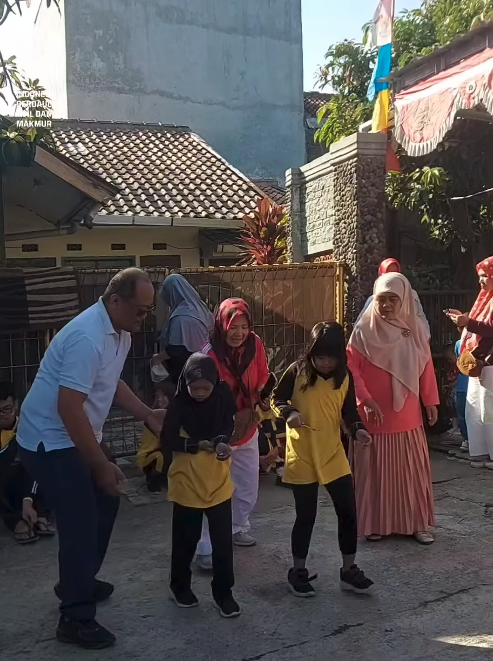
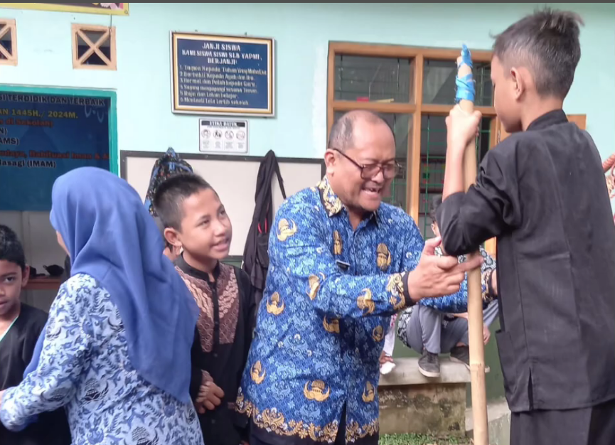
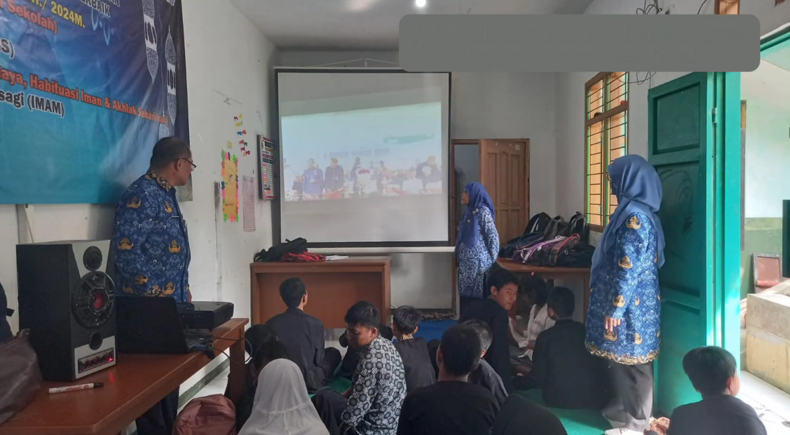

Karena setiap anak adalah cerita yang berharga
Kami memberi ruang bagi setiap anak untuk tumbuh, menemukan potensinya, dan melangkah dengan percaya diri.
Fokus
Pendidikan Khusus
Pendekatan
Aman, Adaptif & Humanis
Orientasi
Potensi & Kemandirian



Mengabadikan perjalanan
Galeri Kegiatan
Keagamaan
Membimbing peserta didik dalam aspek keagamaan.
Kemandirian
Mendorong peserta didik untuk menjadi individu yang mandiri.
Keterampilan
Mengembangkan keterampilan yang berguna dalam kehidupan sehari-hari.
Proyeksi dan langkah kami
Program Pendidikan
Pembelajaran dikembangkan untuk mendukung kemampuan akademik, keterampilan fungsional, serta perkembangan karakter peserta didik.
01
Landasan Keagamaan
Menjadikan nilai-nilai Al-Qur'an dan As-Sunnah sebagai pilar utama dalam membentuk akhlak mulia, habituasi ibadah harian, serta membangun adab dan karakter Islami peserta didik berkebutuhan khusus secara adaptif
02
Layanan Pendidikan Khusus Terstruktur
Menyelenggarakan proses pembelajaran khusus yang terencana, terukur, dan berbasis Program Pembelajaran Individual (PPI), di mana setiap aktivitas belajar dirancang adaptif sesuai potensi dan kebutuhan fungsional peserta didik.
03
Kemandirian Harian (Bina Diri) dan Pembedayaan Vokasi
Mengarahkan seluruh proses pembelajaran pada pencapaian kemandirian merawat diri sendiri (Bina Diri) serta pembekalan keterampilan vokasi praktis untuk merintis transisi kerja menuju ekosistem bisnis inklusif
Optimalisasi kebutuhan sesuai standar pendidikan
Sekilas SLB YAPMI
Peserta Didik
Total peserta didik aktif yang mengikuti proses pembelajaran di SLB YAPMI.
Guru
Tenaga pendidik yang mendampingi proses belajar dan pengembangan potensi siswa.
Rombel
Komposisi kelompok belajar disesuaikan kebutuhan peserta didik.
Peserta Didik
0
Guru
0
Rombel
0
Kelas
0
SLB YAPMI
Jl. Anggrek Magewi No 04 Rancaekek Kencana, Kecamatan Rancaekek, Kabupaten Bandung, Provinsi Jawa Barat
Jam operasional
Senin - Jumat, 07.30 - 15.30 WIB
FAQ
Karena SLB YAPMI hadir dengan pendekatan pendidikan yang humanis, personal, dan berorientasi pada potensi serta kemandirian peserta didik. Kami mengutamakan pembelajaran yang aman, adaptif, dan berdampak pada kehidupan sehari-hari, baik dalam aspek keagamaan, akademik, maupun keterampilan praktis.
Ya, SLB YAPMI terbuka untuk calon peserta didik baru yang membutuhkan layanan pendidikan khusus. Anda dapat menghubungi sekolah untuk menanyakan proses pendaftaran, kebutuhan dokumen, dan jadwal wawancara awal.
Program yang menjadi fokus utama adalah pendidikan berbasis keagamaan, penguatan kemandirian, serta pengembangan keterampilan vokasional. Semua program dirancang agar peserta didik dapat tumbuh secara optimal sesuai kebutuhan dan potensinya masing-masing.
Cari tahu lebih lanjut
Ingin tahu lebih lanjut tentang sekolah, kegiatan, dan proses pendaftaran? Kami siap membantu.